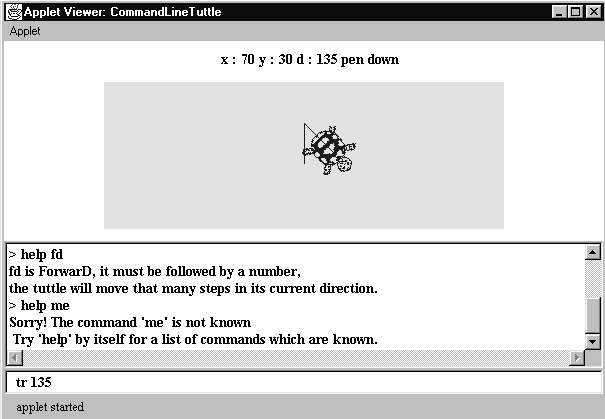

The CommandLineTuttle interface provides the traditional method of instructing a tuttle and, for experienced users, provides the most efficient and powerful mechanism. The appearance of the CommandLineTuttle interface is shown in Figure 7.5.

Figure 7.5 The CommandLineTuttle interface, (with the drawing area reduced in height).
The single line TextField at the very bottom of the interface is used by the user to type in the commands. Above it a TextArea records the commands which the user has issued and also outputs any messages from the tuttle to the user. Every command which the user inputs is echoed in the TextArea preceded by a chevron ( > ) and any messages from the interface in response to the command are shown below it. The TextArea provides a history list of the commands which have been issued which the user can use to refresh their memory of what has happened and also can us to copy commands from it to paste into the TextField.
The design of the language used to command the tuttle is implicit in the TextTuttle class. The commands should be constructed in a regular manner; in this example each command consists of a verb, for example forward, and is possibly followed by a single argument, for example 100. This should never be reversed, for example stating the color followed by background or foreground ( e.g. green foreground ).
The abbreviations used for the verbs have likewise been chosen in a regular manner, using key letters from the full name of the command. Although it should not be assumed that these are always unambiguous, for example the command turn right ( tr ) could just as easily have been right turn ( rt ) or even clockwise ( cw ). An alternative technique for the selection of the abbreviations might be to use the first two unique letters of a command.
A more complete command line system might employ synonymous commands, for example the turn right command could be issued as: turn right, right turn, tr or rt. (One famous example of the mis-use of this consideration is an interface which, when the command exit is given, responds "If you want to exit the application you must type 'quit'."). As with icons there are techniques which can be used to identify a set of verbs, and an associated syntax, which are most acceptable to the users.
Design Advice
The language of a command line interface should be constructed so as to be as regular and predictable as possible.
There is one exception to the regularity of the command language used in this interface. The exit command does not have an abbreviation and must be given as "exit please". The reason for this is that the consequences of using the exit command by accident are so severe that the irregularity is intended to reduce the probability of this happening. However, it can also be predicted that for a very experienced user this effect will be lost. For example the MS DOS delete command del will ask for a confirmation if it is used to delete all the files in a directory: ( C>del *.* \n Are you sure (Y/N) y ). An experienced user will conceptually compile this sequence of two operations into a single operation and, on occasion, will use the compiled sequence by accident.
As there is so much potential uncertainty, for the user, in the format of the commands an effective help facility is essential for all command line interfaces. This is vital for novice users of the interface who, when presented with a blank command line for the first time, may have no idea of what to do. It is also essential for very experienced users who may use many different command line systems and can become confused on a particular system. For example: the commands to exit from different command line systems include: exit, quit, logout, system and bye. The details of the help facility for the tuttle command line system are indicated in Figure 7.5 and will be presented in the description of its implementation below.